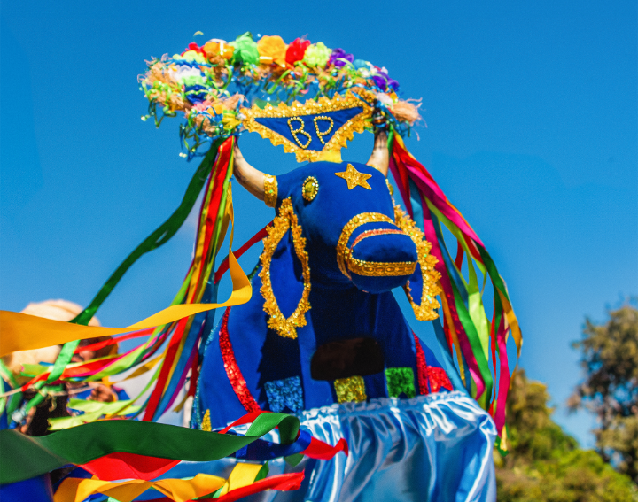
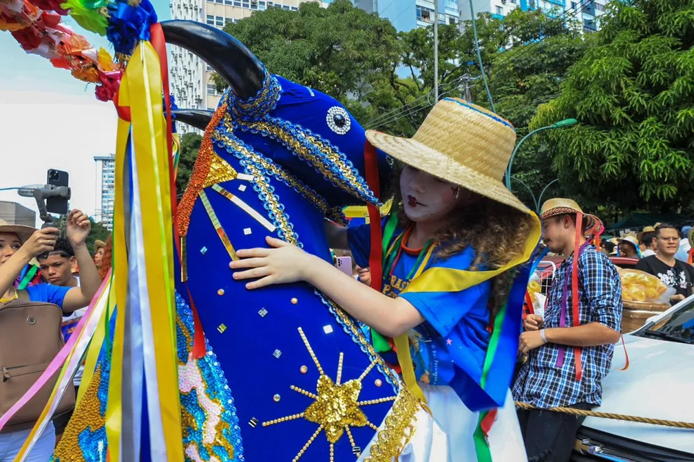
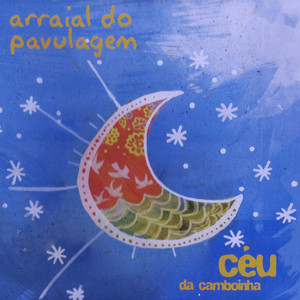

Batalhão da Estrela
Centenas de brincantes voluntários — entre músicos, pernaltas e dançarinos — que ensaiam meses antes para dar som e alma ao cortejo.

Criado em Belém do Pará por Ronaldo Silva e Júnior Soares, o Arraial do Pavulagem nasceu do desejo de celebrar e manter vivos os ritmos da cultura popular amazônica. No vocabulário paraense, 'pavulagem' significa charme, brilho e o orgulho alegre de mostrar quem se é.
Hoje reconhecido como Patrimônio Cultural Imaterial, o movimento transforma as ruas do centro histórico em um grande palco a céu aberto, reunindo milhares de pessoas em cortejos gratuitos embalados por carimbó, retumbão, toada de boi e marujada.

Ronaldo Silva e Júnior Soares criam o Arraial para celebrar os ritmos da cultura popular amazônica.
Músicos, pernaltas e dançarinos transformam o boi, o batuque e o chapéu de fitas em símbolos da festa.
A manifestação passa a ser reconhecida como parte essencial da memória cultural do Pará.
Milhares de pessoas se encontram nos cortejos gratuitos do centro histórico de Belém.
Centenas de brincantes voluntários — entre músicos, pernaltas e dançarinos — que ensaiam meses antes para dar som e alma ao cortejo.
Símbolo maior da festa, o boi-bumbá com a estrela na testa conduz a multidão e celebra a força do Bumba Meu Boi amazônico.
O grande ícone visual da manifestação: chapéus de palha decorados com fitas coloridas que balançam no ritmo da percussão.
Toque nos símbolos para descobrir um pouco do imaginário que acompanha os cortejos do Pavulagem.
Nos ensaios, passam de boca em boca os ritmos, os passos, os versos e os gestos que dão forma ao cortejo.
A estrela guia o batalhão e faz brilhar a presença coletiva de músicos, pernaltas e dançarinos nas ruas.
Com a estrela na testa, o boi-bumbá conduz a multidão e celebra a força do Bumba Meu Boi amazônico.
As fitas coloridas balançam com a percussão e transformam o chapéu de palha em ícone visual da festa.

Brincantes, músicos e dançarinos ocupam as ruas do centro histórico em um cortejo gratuito e aberto a quem quiser acompanhar.
Carimbó, retumbão, toada de boi e marujada embalam o desfile, conduzidos pela percussão e pelo canto coletivo.
Você pode ir com a família, o namorado ou a namorada e os amigos, acompanhar o cortejo em pontos próximos ao percurso, usar roupas leves e ficar atento à segurança das ruas.
Se quiser participar dos ensaios, dançar ou aprender a coreografia para se preparar, acompanhe as redes sociais do Arraial do Pavulagem. Por lá você fica sabendo das datas e orientações e pode tirar suas dúvidas.
Roteiro ilustrativo das etapas do dia; as datas e horários oficiais podem ser atualizados aqui.
Brincantes, músicos e o boi se reúnem no ponto de encontro.
A banda inicia a caminhada e o cortejo ganha as ruas.
O grupo percorre as ruas e encontra o público ao longo do trajeto.
O cortejo se reencontra no ponto final para o encerramento.

Vocais: Ronaldo Silva e Júnior Soares.
Integrantes da gravação:
Toque ou clique nas fotos para ampliar.